In modern life, due to the development of the logistics industry, tracking numbers used to track orders have
become
familiar and widely used by the public. By checking your tracking number, you can find out what you have
purchased,
which city it is currently in, which neighborhood it is in, who the delivery person is, how long it will take
to arrive
at your house or the nearest post office, and whether it will be shipped by air, sea, or land. This modern
technology
bears a striking resemblance to ancient hunting techniques.
It is well known that every tracking number is unique and consists of random numbers or letters (varying from
company to
company, from pure numbers to combinations of numbers and letters). In hunting, tracking prey can be
considered almost
exactly the same. Prey tracks are like randomly generated tracking numbers that help the hunter find, lock
onto, and
follow their target. Different prey leave very distinct traces, tracks, droppings, or habits, allowing hunters
to
quickly pinpoint their targets based on these details. Just as all people's fingerprints are different, the
traces left
behind are unique even among the same species. For example, the footprints of an adult animal are deeper and
larger than
those of a hatchling. By observing the animal's feces, hunters can determine when it left, how long it has
been gone,
and other details.
Next, I hope to give you an idea of how tracking numbers work by describing more about tracking prey in
hunting.
Tracking Technology in Hunting Activities
The origin of hunting activities can be traced back to the early Paleolithic period. Hunting is an ancient
production
method in human history. As early as 2 million years ago in Africa, early humans were able to successfully
carry out
hunting. Through long-term hunting practice, humans not only solved the problem of food but also formed a way
of life
that harmonized with each other and the environment.
Hunting is a complex discipline involving the cycles of seasons, the behavior of all living things, the
balance of yin
and yang, and the tactics and art of war. This discipline is closely related to nature and is very
challenging.
In ancient hunting activities, hunters often needed to capture prey through exceptional observation and skill.
To obtain
prey, hunters had to use certain hunting tools and apply specific hunting methods, such as roundup, patrol
hunting,
ambush hunting, concealment, and luring. One of the key techniques is tracking technology. Hunters use
tracking
technology to follow the prey and gather information about their actions and behavior.
Hunters use tracking techniques to locate prey.
They look for traces like tracks, droppings, rubbed bark, or grass left by prey. By carefully observing and
recognizing these traces, hunters can determine the area and direction of their prey's movement. This helps
them to
better set up traps or ambush prey.
Tracking prey helps hunters understand the behavioral habits of prey.
Hunters watch for signs of prey, explore their habitats, food sources, water sources, and other important
information.
By tracking prey and observing their daily behavior, hunters can better understand the habits of their prey
and apply
this information to their hunting strategies.
Hunting Activities and Order Number Tracking
In real life, there is a link between hunting activities and order number tracking, and there are similarities
between
the two in terms of tracking and managing targets.
Target tracking: Hunting activities and order number tracking both involve tracking and
positioning targets.
In
hunting, the hunter tracks the location and activity trajectory of the prey to obtain the target. In order
tracking, the
enterprise monitors the production, transportation, and delivery process of the product through the order
number
tracking system to ensure the product reaches the customer on time.
Resource management: Both hunting activities and order number tracking involve effective
management of
resources.
Hunters need to reasonably plan hunting routes and time, effectively using resources to capture prey.
Similarly, order
number management involves tracking and managing logistics, inventory, and other links to achieve the optimal
allocation
and utilization of resources.
Data application: Hunting activities and order number tracking require collecting,
analyzing, and applying
data.
Hunters judge the location and behavior of the prey by observing data and traces of the prey's activities.
Enterprises
collect order information and inventory data through the order number tracking system to help make decisions
and
optimize logistics operations.
Goal attainment: There is a similarity in the final purpose. In hunting, hunters aim to
successfully capture
prey to
gather food. In order tracking, enterprises aim to ensure the on-time delivery of orders through the order
number
tracking system to achieve customer satisfaction and business goals.
Order tracking includes the following
To summarize, both hunting activities and order number tracking involve tracking, managing, and achieving
goals. They
share commonalities in resource management, data application, and goal achievement. By applying tracking
principles from
hunting activities to order number tracking, enterprises can manage logistics more effectively, optimize
operations, and
improve efficiency and customer satisfaction.
Order Confirmation: After a shopper places an order, the merchant confirms the order
information and arranges the appropriate processing
flow.
Inventory Management: Merchants manage their inventory according to the order to ensure
that goods are adequately stocked.
Logistics and Transportation: This involves the transportation link of the order in the
supply chain, such as purchasing, packaging, and
distribution.
Delivery Status: This includes the status of orders shipped, in transit, dispatched, etc.,
as well as the estimated delivery time.
Signing Feedback:Shoppers can evaluate the order after receiving it.
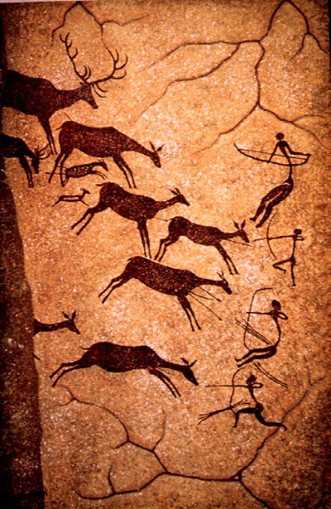
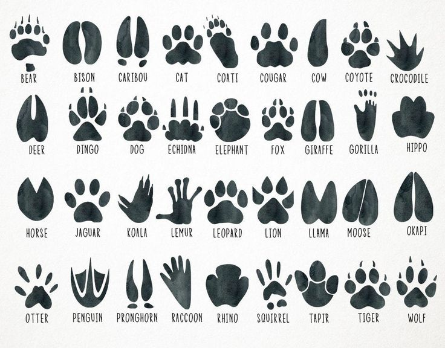
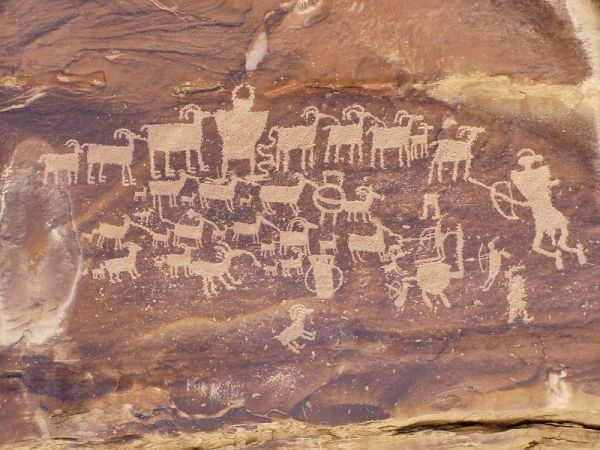
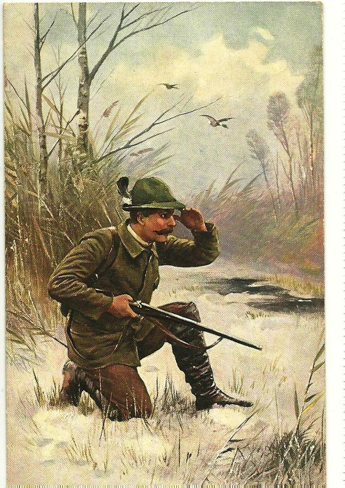
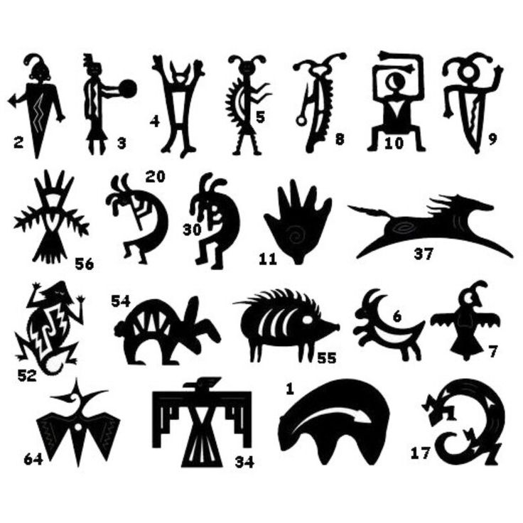
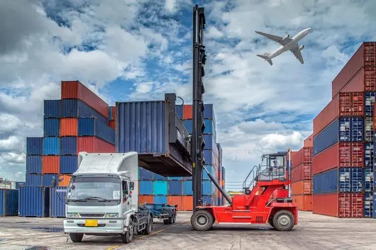
Through the order tracking system, shoppers can check the status and location of the order in real-time,
understand the transportation progress of the goods, and the expected delivery time. This helps shoppers better grasp order
information, improving their shopping experience and customer satisfaction.
Hunting Activities and Order Number Tracking Process Examples
When specifically analyzed, the entire order number tracking process is like a hunting activity:
Determine the Target
Hunting
Through local guides or website queries, confirm the local animal species. Understand the habits,
behaviors,
characteristics, and habitats of the animals in advance. Combine this information with personal preferences
to determine
the target prey you want to capture.
Once the prey is determined, the hunter starts looking for it. The prey may travel through various woods,
bushes,
mountain streams, and creeks, leaving many traces along the way. These traces provide direction and guidance
for the
hunt.
Special circumstances: If the local animal activity information is inaccurate, the desired animal may not
be available
in the area, leading to a failed hunting activity.
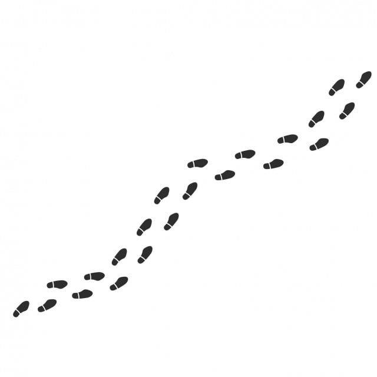
Order Tracking
Search for the items you want to buy on the shopping website. Compare and analyze the types, colors,
styles, sizes,
etc., of the items in advance. Combine this information with your preferences to determine the target items
you want to
buy, and submit the order instructions to the system.
Once the instruction is given, the merchant processes the order. During processing, the order may pass
through several
departments and manufacturers. Ordered goods in transit may also pass through multiple cities and
neighborhoods. At each
location, the transfer station records arrival and departure times, handover, and delivery times, creating a
traceable
record.
Special circumstances: If the item described when placing the order is not available at the store, or if
the address,
name, phone number, etc., are inaccurate, the purchase may be unsuccessful.
Tracking Operations
Hunting:
oGet a local guide to take you to a hunting ground. Then, you can use a combination of the following methods
to track
and find your target:
Observe the traces: Look for footprints, hair, feces, food residues, or other signs of
the prey's
activities, such as
bark being grubbed up, leaves being stepped on, or fruits being chewed. These traces help determine the
scope of the
prey's activities and their paths.
Consult with local hunters: Ask experienced hunters in the area about the prey's
behaviors, such as
activity times,
habitats, and feeding habits, to predict and track their whereabouts.
Use tools: Employ tools like binoculars, infrared monitors, and tracking dogs to enhance
tracking
effectiveness.
Simulate prey: Sometimes, simulating the sounds or releasing the scents of prey can
attract them, making
it easier to
track and capture the target.
oThrough these methods, the certainty and efficiency of tracking prey can be improved in various aspects,
helping to
achieve the goal of capturing prey as soon as possible.
Special Circumstances:
The target's trail may be lost due to changes in environmental conditions, extreme weather (heavy rain,
snow, or
strong winds), wind direction, time of day, etc. Additionally, the target animal may sense the hunter's
presence and
escape, or be frightened by other wildlife or tourists, hindering the tracking process.
The prey may have been tracked and captured by another hunter, necessitating a search for new prey.
In rare cases, the target animal may have been eaten by a larger predator, requiring the identification
and tracking
of a new target.
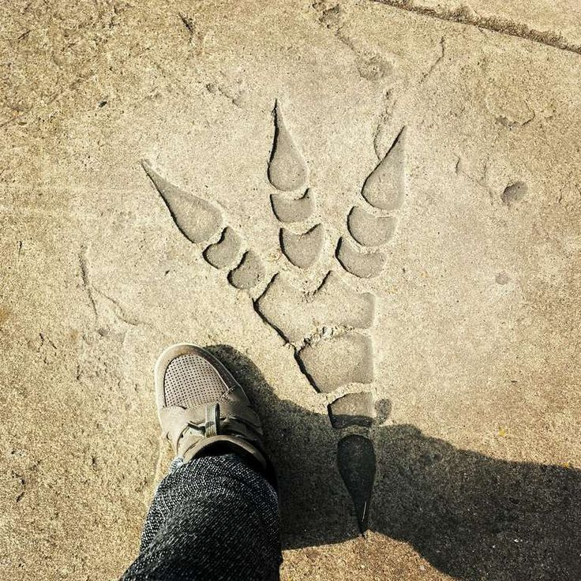
Order Tracking
oThe merchant accepts the order, packages the item, and delivers it to the local post office or courier
company.
Purchasers can track their orders through the following ways and means:
Logistics tracking number: Use the logistics tracking number provided by the online
shopping platform to
check the
real-time location and status of the goods on the logistics company's website.
Order tracking system: Purchasers usually receive an order confirmation email containing
the order number
and related
information. They can track the order status by logging into the merchant's official website or application
and entering
the order number.
Inquiries to customer service: Purchasers can inquire about the order status and
estimated delivery time
through the
merchant's customer service phone number or online customer service system.
SMS/Email alerts: Some merchants send SMS or email notifications to purchasers when the
merchandise has
been shipped
or delivered. These notifications provide order status information.
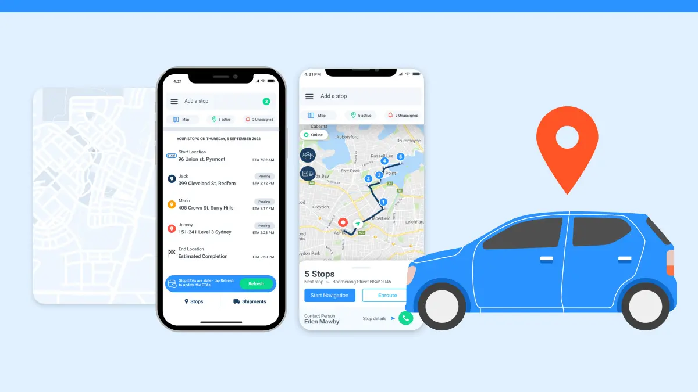
oBy tracking the progress of logistics through these methods, purchasers can monitor the transportation
process and urge
the merchant to improve efficiency, helping to achieve the goal of receiving the purchased goods as soon as
possible.
Order Tracking
The tracking of ordered goods may be obstructed, delayed, or damaged in transit due to weather conditions
or
emergencies, such as floods, fires, traffic accidents, or strikes.
The purchased item may be sent to another buyer due to a dispatch mistake by the logistics company or due
to the
courier misreading the address. Reviewing the tracking information can help the courier retrieve the item
for
re-delivery.
In rare cases, the goods may be lost due to improper handling by the courier company or other reasons. The
merchant
must resend the item, requiring a new round of order tracking to complete the process.
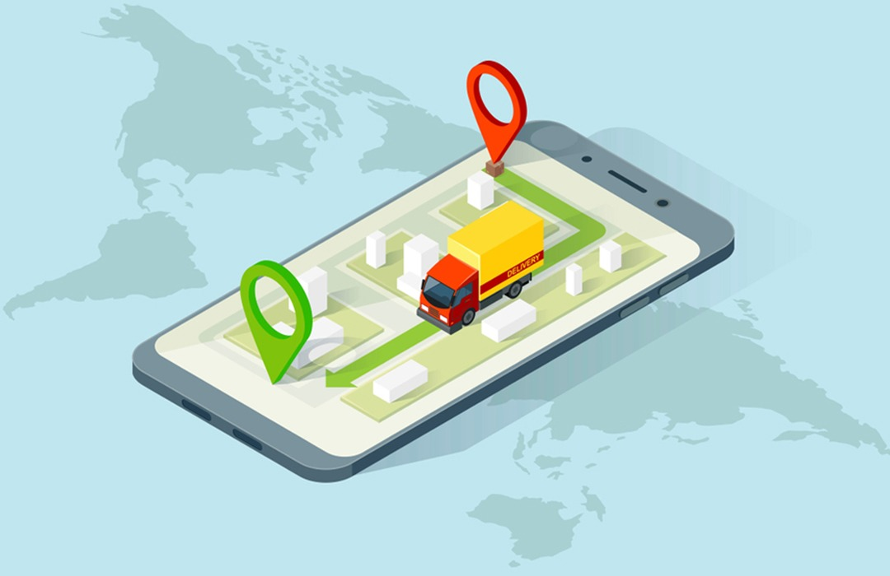
Capture/Delivery
Hunting:
Hunters use a combination of hunting and tracking techniques, weapons, and tools to help them successfully
capture
prey.
Special Situations: Tracking prey requires a certain level of skill and experience. If the
hunter lacks the necessary
skills or experience, or if the supporting tools malfunction and fail to locate the prey accurately, they
may not be
able to successfully capture the target prey.
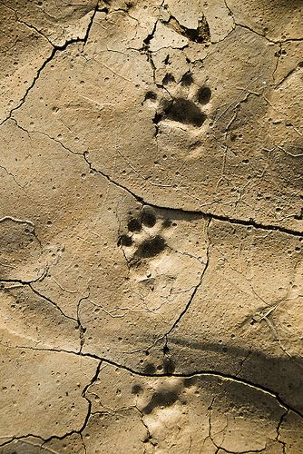
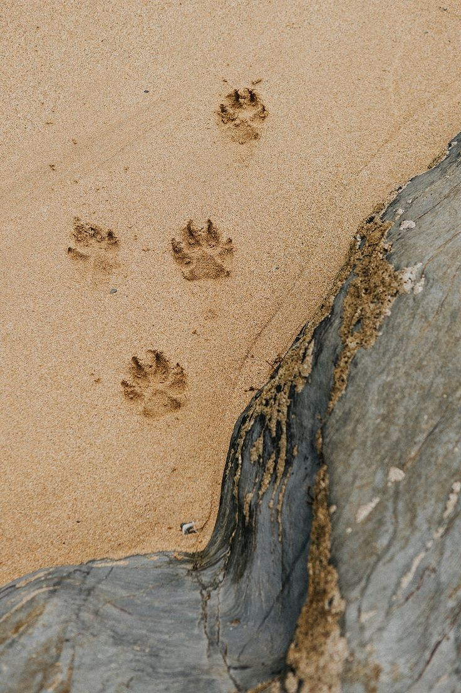
Order Tracking:
Buyers use order management systems, logistics tools, and customer feedback to help them track orders and
ensure smooth
delivery.
Special Scenarios: malfunction or error in the order management system may result in
inaccurate order information,
affecting the results of order tracking and ultimately preventing the delivery of goods.
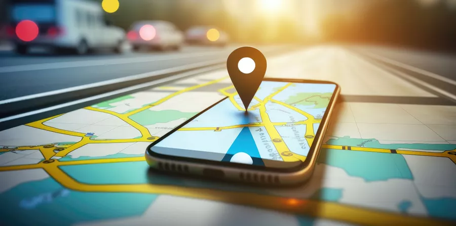
With the similar scenarios and outcomes listed above, it is evident that hunting and order tracking share many
similarities in the processes of finding, tracking, and reaching goals. Both require skills, tools, and monitoring to
ensure ultimate success.